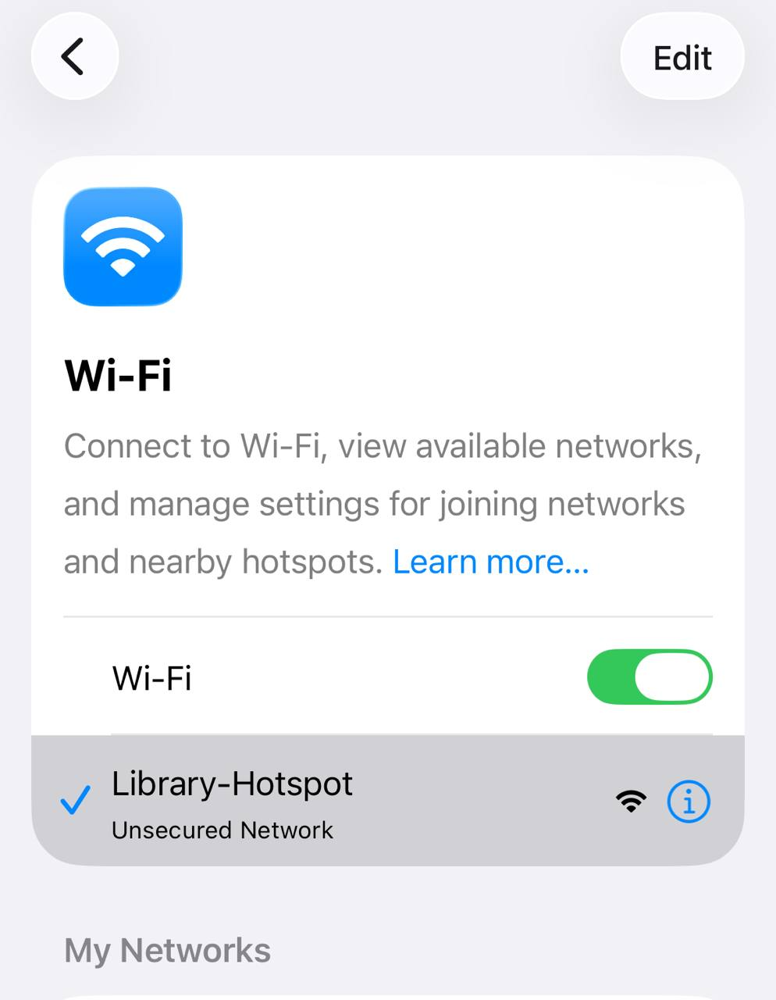
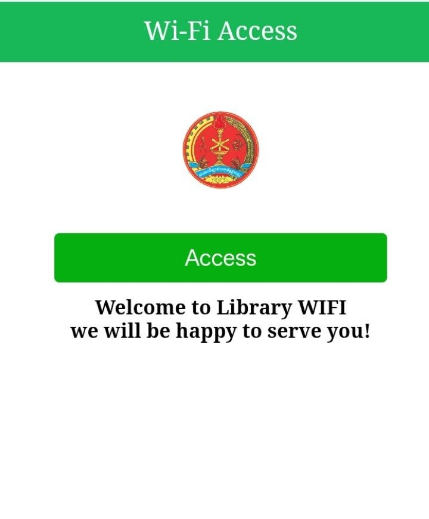
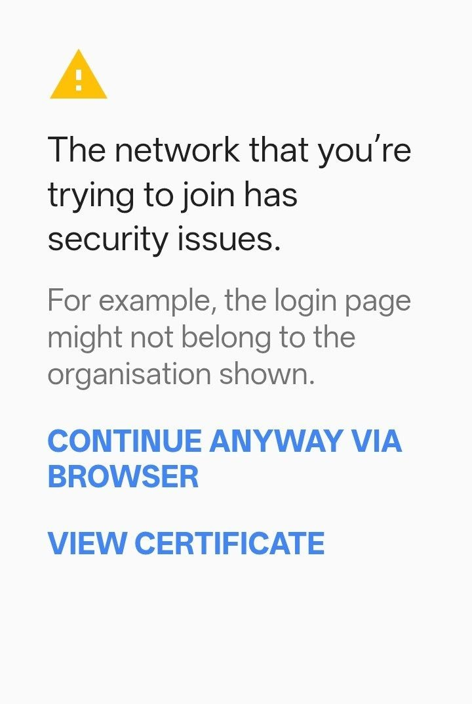
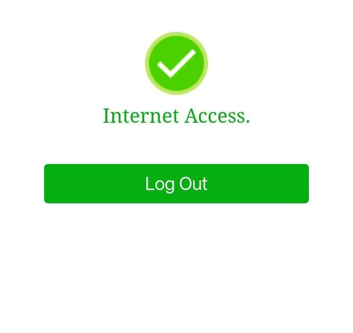

របៀបភ្ជាប់ Library Hotspot
Connect to the Library Wi-Fi
ណែនាំការភ្ជាប់ Wi-Fi Hotspot នៅបណ្ណាល័យ ក្នុង ៤ ជំហាន
1
Turn on Wi‑Fi and select
Library‑Hotspot
បើកកុងតាក់ Wi‑Fi ក្នុងទូរស័ព្ទ ឬកុំព្យូទ័ររបស់អ្នក រួចជ្រើសរើសបណ្តាញឈ្មោះ Library‑Hotspot ពីបញ្ជី
Wi‑Fi settings

2
Tap
Access
on the welcome page
ទំព័រស្វាគមន៍ពណ៌បៃតងនឹងបើកដោយស្វ័យប្រវត្តិ។ ចុចប៊ូតុង Access ដើម្បីចូលប្រើអ៊ីនធឺណិត
Browser opens automatically

3
If you see a security warning, tap through it
ប្រសិនបើឃើញសារព្រមានសុវត្ថិភាព នេះជារឿងធម្មតា សូមចុច Advanced រួចចុច Proceed anyway ដើម្បីបន្ត
Advanced → Proceed anyway

4
You're connected once you see "Internet Access"
នៅពេលឃើញសារ Internet Access ជាមួយសញ្ញាធីកពណ៌បៃតង មានន័យថាអ្នកបានភ្ជាប់ជោគជ័យ
✓ Internet Access

Link copied!